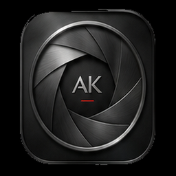
撮るだけで、空気感のある一枚に。
Android用カメラアプリ ／ 現像までぜんぶ端末の中で
クローズドテスト準備中About
スマートフォンで撮った写真を、あとからアプリで整えている人は多いと思います。 AK CAMERA は、その工程をシャッターを押した先でまとめて済ませてしまうカメラです。 露出を決めて、複数枚を重ねてノイズを減らして、色を作って、ボケを作る—— そこまでを1回のシャッターの中でやります。
処理はすべて端末の中で完結します。本アプリはインターネット権限そのものを持っていないので、 撮った写真や設定が開発者のサーバーへ送られることはありません。
通信しません。撮影・現像・ボケの推論まで、電波の無いところでも同じように動きます。
スタンダード / 風景 / ポートレート / フィルム / モノクロ など。選んだ瞬間からプレビューが変わります。
奥行きを推定して背景をぼかし、4枚・8枚を重ねて暗いところのノイズを減らします。
画面に出す情報量を3段階で切り替え。操作を減らすのではなく、見えるものを整理します。
現像前のJPEG、対応端末ならRAW(DNG)も同時に保存できます。
日付・端末名・署名を入れた帯を写真の下に付けられます（切ることもできます）。
Gallery
いずれも AK CAMERA で撮影して、そのまま保存された写真です（リサイズ以外の加工はしていません）。 ルック名は、写真のEXIFに残っている撮影時の記録から取っています。
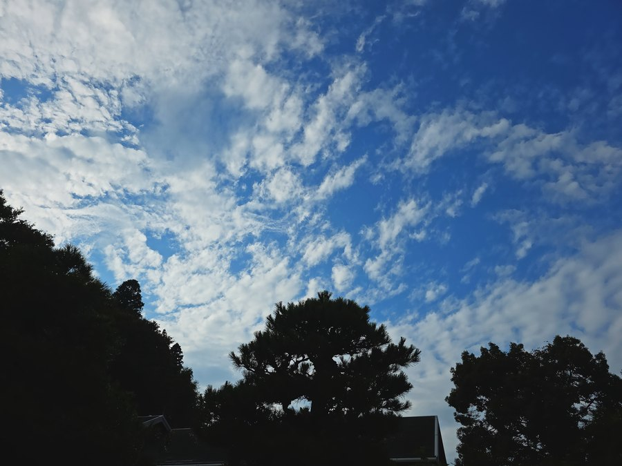
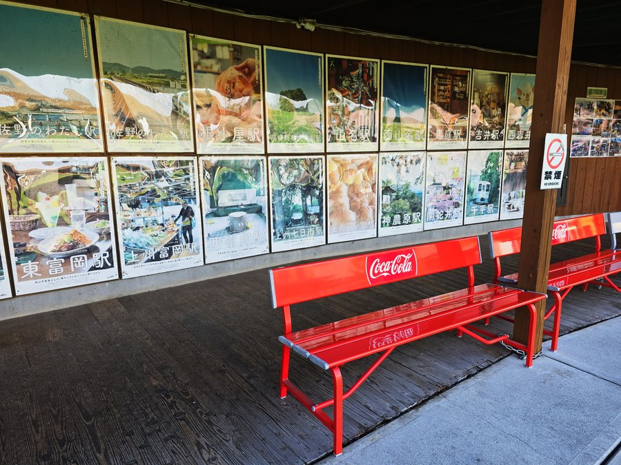
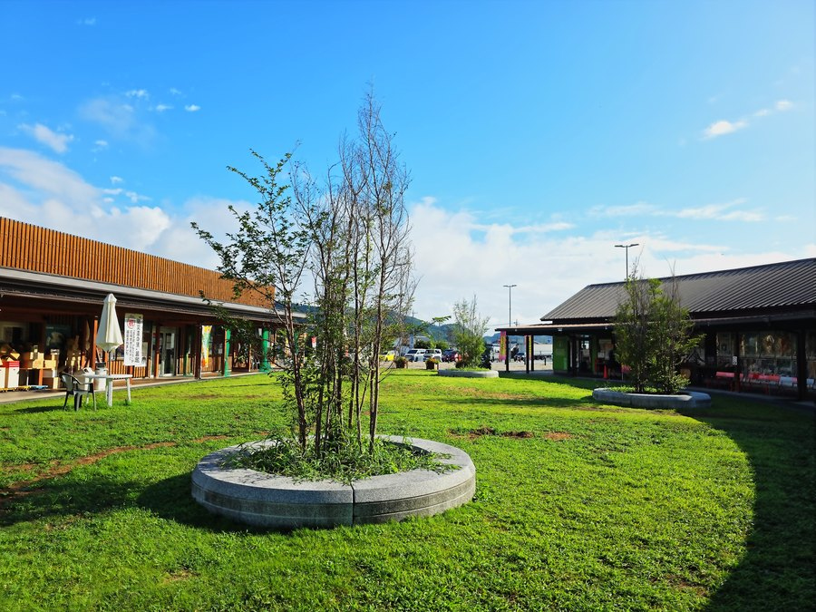
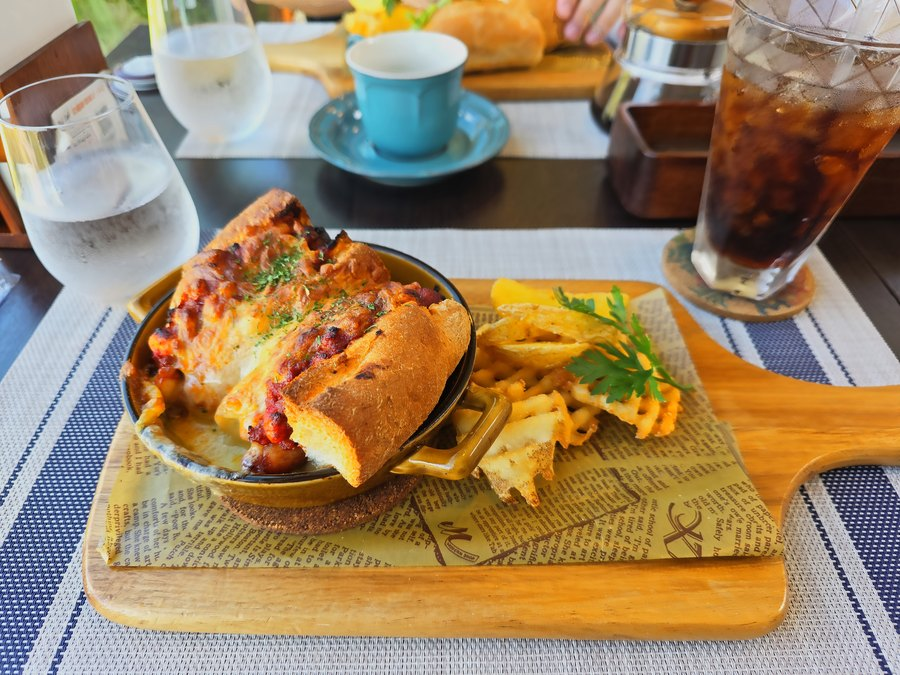
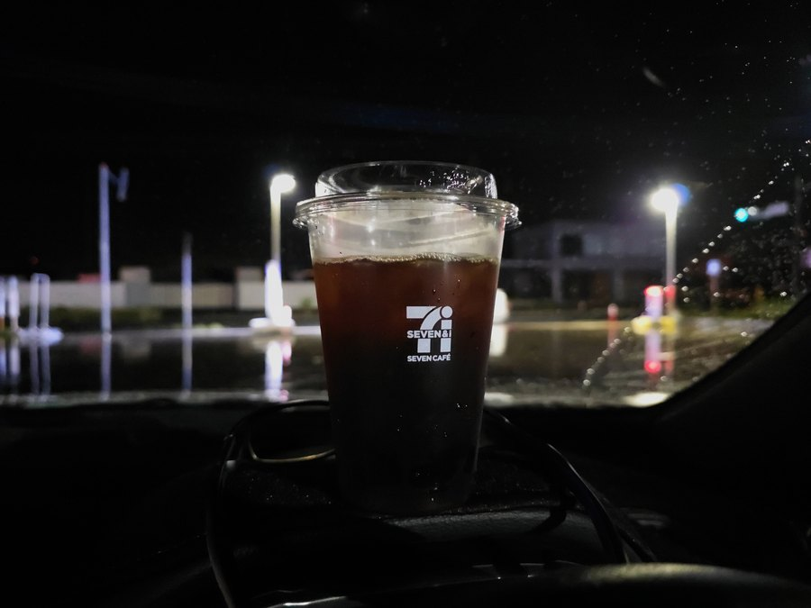
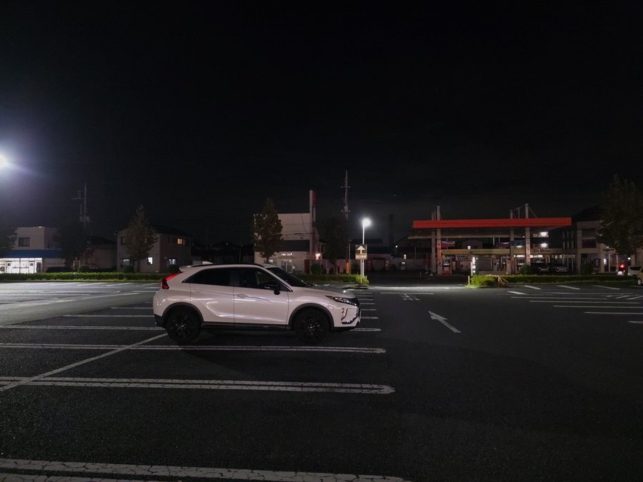
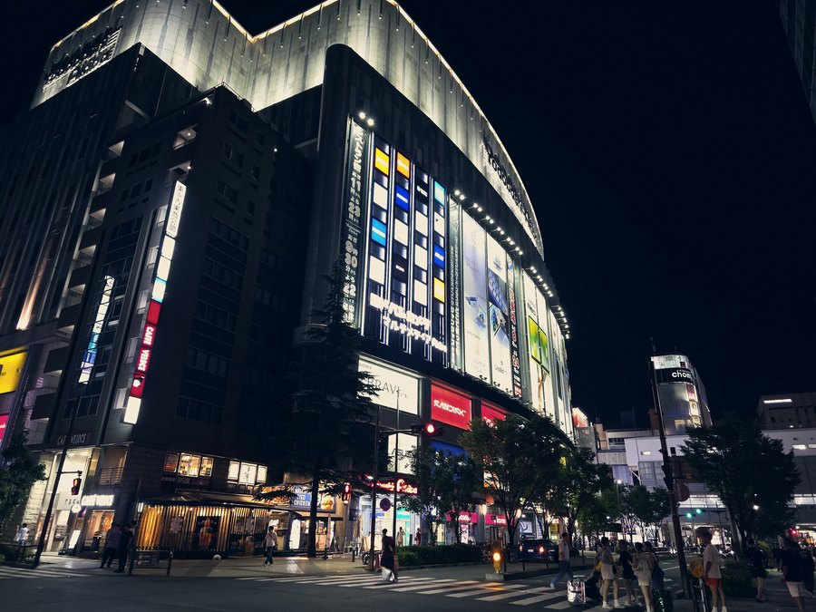
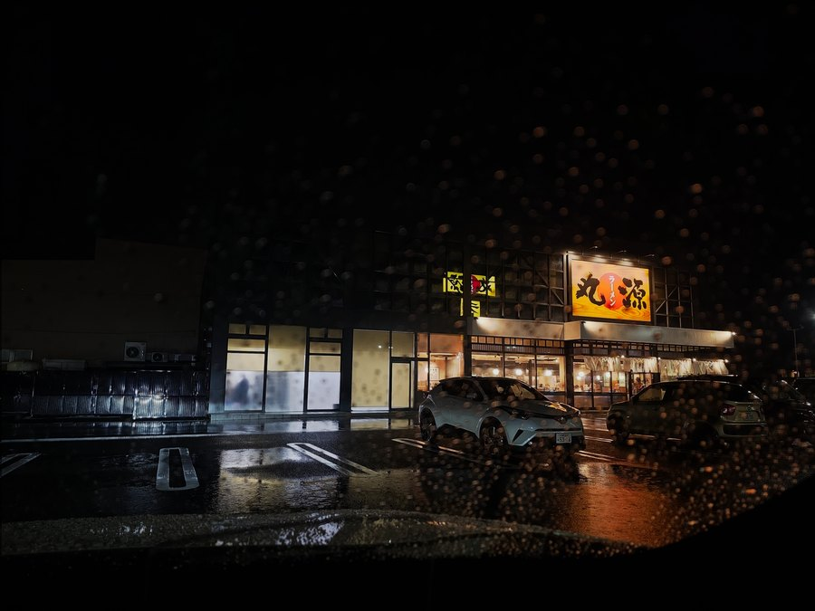
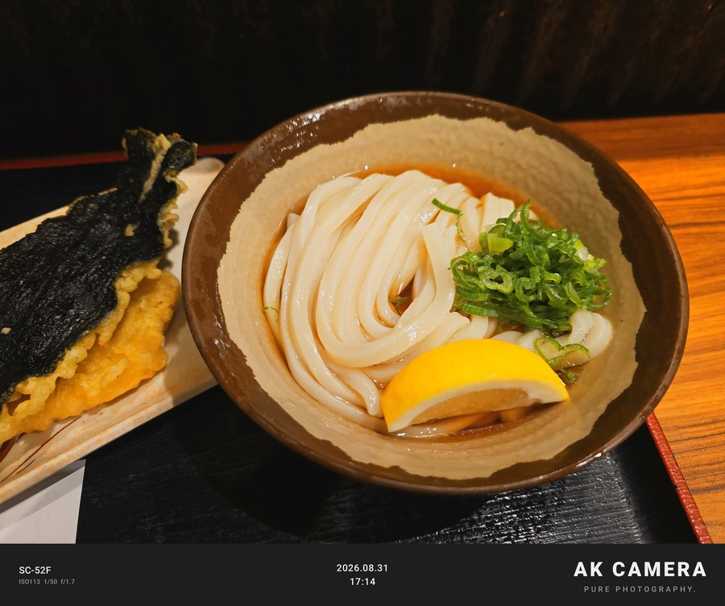
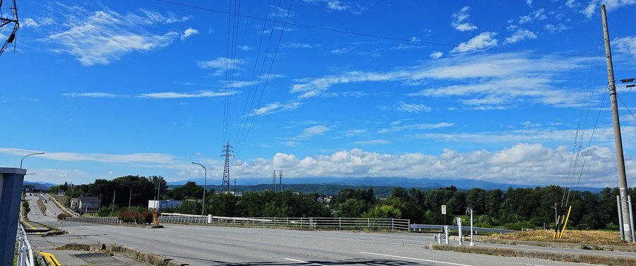
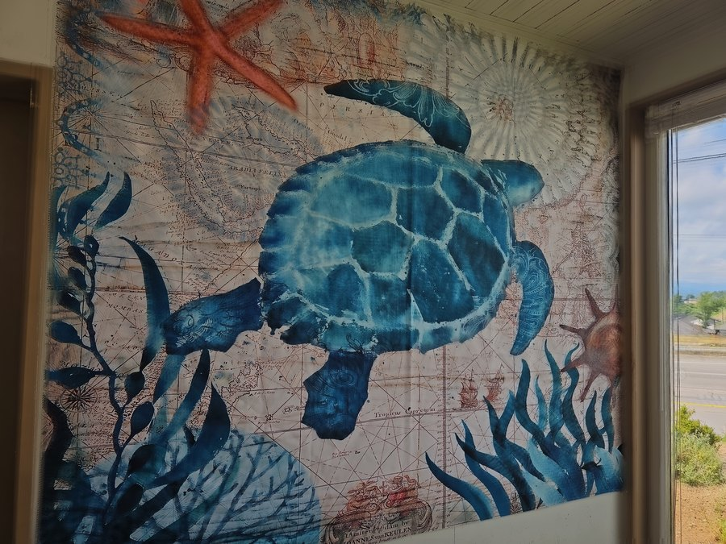
上が全体、下が同じ写真の等倍切り出し（縮小していません）。細い文字までそのまま残ります。
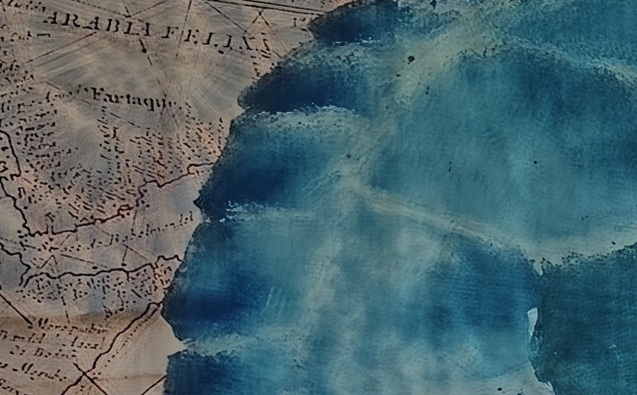
Screens
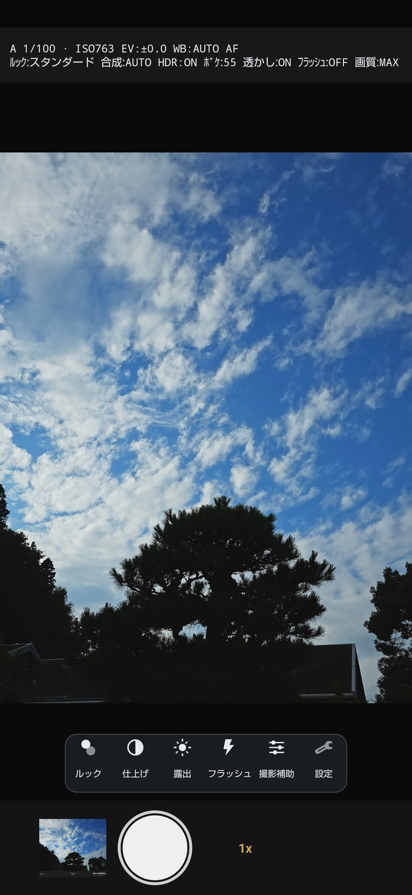
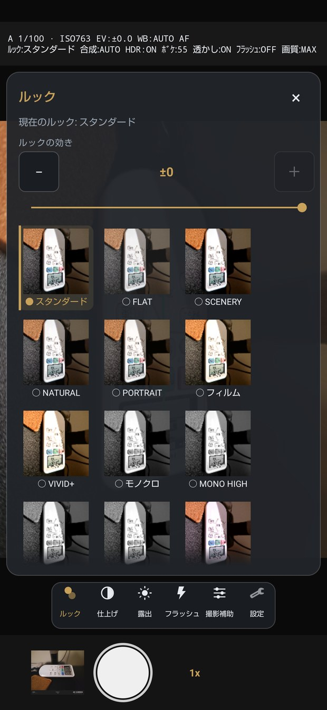
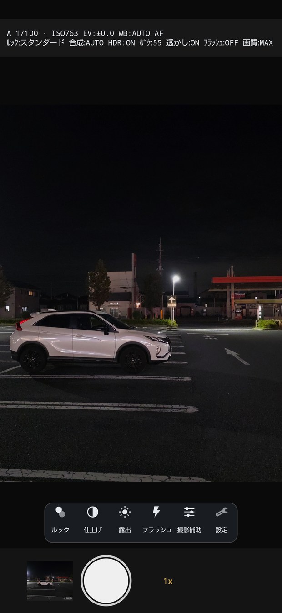
Spec
| 撮影 | 露出 オート / 絞り優先 / シャッター優先 / マニュアル、露出補正、ホワイトバランス、タップAF、AFロック、セルフタイマー、音量ボタンでシャッター |
|---|---|
| 画づくり | 21種類のルック、効きの強さ、彩度・明瞭度・シャープの微調整、HDR、4枚 / 8枚の合成 |
| ボケ | 奥行き推定による背景ぼかし（端末内推論）。強さを段階で調整 |
| 保存 | 現像済みJPEG、元画像JPEG（任意）、RAW/DNG（対応端末のみ・任意）、動画 |
| 表示 | かんたん / 標準 / プロ の3段階、構図グリッド、水準器、ピーキング、縦横の自動追従 |
| その他 | 透かし（ロゴ・署名・日付・端末名）、写真へのGPS記録（任意）、診断レポートの書き出し |
| 動作環境 | Android 11（API 30）以上。ボケや夜景など一部の機能は端末の対応状況によります |
| 通信 | なし（インターネット権限を宣言していません） |
Contact
現在はクローズドテストの準備中です。Google Play での配信が始まりましたら、このページにリンクを出します。
不具合の報告は、できれば端末名・版数・操作手順を添えていただけると助かります。 アプリの 設定 > アプリ > メールで連絡する から送ると、版数と端末名が自動で入ります。
Support
広告は入れていません。アプリ内購入もありません。利用状況の収集や解析も行っていません。 機能を使うのにお金を払う必要は、これからもありません。
それでも「使っていて良かった」と思っていただけたら、Ko-fi から開発を支援できます。 いただいたぶんは、検証用の端末と公開にかかる費用にあてます。 支援しても機能は増えません——すべての機能を最初から全員に開いています。